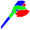
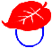

หน้าแรก › ไอเทม
 ไอเทม ใช้ได้
ไอเทม ใช้ได้
ไอเทมแบ่งเป็นหมวด อาวุธ/เครื่องมือ · เสื้อผ้า · วัตถุดิบ · อาหาร/ยา · เมล็ด — เลเวล การได้มา ล็อกและทิ้ง
ของทุกชิ้นในกระเป๋ามี หมวด · เลเวล · และอาจมี คุณสมบัติ ติดมา หน้านี้สรุปภาพรวม แล้วแยกรายละเอียดแต่ละหมวดไปหน้าย่อย พร้อมรูปไอคอนจริงในเกม
หมวดของไอเทม
| หมวด | มีอะไร | อ่านต่อ | |
|---|---|---|---|
 | อาวุธและเครื่องมือ | ขวาน ค้อน ดาบ หอก ธนู หน้าไม้ อีเต้อ พลั่ว เลื่อย ฉมวก เครื่องครัว ชุดซ่อม | อาวุธและเครื่องมือ |
 | เสื้อผ้าและเครื่องประดับ | ชุดตามอาชีพ หมวก ถุงมือ รองเท้า กระเป๋า ของแต่งตัว | เสื้อผ้าและเครื่องประดับ |
| วัตถุดิบ | พืช ไม้ ชิ้นส่วนสัตว์ หิน แร่ โลหะ วัสดุแปรรูป เมล็ด ปุ๋ย | วัตถุดิบ | |
| อาหาร เครื่องดื่ม และยา | อาหารปรุง วัตถุดิบอาหาร เครื่องดื่ม ยา สีย้อม | อาหาร เครื่องดื่ม และยา | |
| สิ่งปลูกสร้างและเฟอร์นิเจอร์ | สร้างจากแบบแปลน แล้วแพ็กเป็นไอเทมพกไปวางที่ใหม่ได้ | การก่อสร้าง | |
 | สายบังเหียน | ได้จากการจับสัตว์ป่า ใช้ฝึกให้เชื่องแล้วเป็นสัตว์เลี้ยง | การจับสัตว์ |
เลเวลของไอเทม
| ได้มาจาก | เลเวลที่ได้ |
|---|---|
| เก็บของ / แล่ซาก | ตามเลเวลแหล่ง (บวกโบนัสสกิล) แต่ไม่เกินเลเวลตัวละคร |
| คราฟต์ | เฉลี่ยเลเวลวัตถุดิบทุกชิ้น ปัดลง ไม่เกินเลเวลสูงสุดของสูตร |
| ร้านค้า / รางวัล / เสบียง | เลเวลที่กำหนดไว้ในแพ็ก (ส่วนใหญ่ 1) |
ไอเทมแต่ละชนิดมี เลเวลได้ถึง (เลเวลสูงสุดของชนิดนั้น) — ตารางในหน้าย่อยใช้ตัวเลขนี้
ได้ไอเทมจากไหน
- เก็บจากธรรมชาติ — พืช ไม้ หิน แร่ ดิน น้ำ (การเก็บของ)
- ชำแหละซากสัตว์ — เนื้อ หนัง กระดูก ไขมัน เขา ฟัน (สัตว์ป่า)
- คราฟต์ — ปลดสูตรจาก สกิล แล้วทำเอง (การคราฟต์ · การทำอาหาร)
- ปลูก — เมล็ดในแปลงนา (การเพาะปลูก)
- สิ่งปลูกสร้างที่เก็บผลได้ — บ่อน้ำ กับดักปลา ต้นไม้ปลูก (กับดักและบ่อน้ำ)
- ร้านค้า — ตอนนี้ขายแค่ ตั๋วรีเซ็ตสกิล (9,000 T) · แพ็ก กล่องสุ่ม และไอเทมอื่นปิดขายอยู่ · ของที่ซื้อไว้แล้วยังรับและใช้ได้ตามเดิม (ร้านค้า)
- ตลาดผู้เล่น — ซื้อจากผู้เล่นคนอื่น (ตลาดและร้านค้า)
- รางวัล — เสบียงองค์กร ภารกิจ (องค์กร) · เควส เช็กชื่อรายวัน แบบแปลนรายสัปดาห์ (เควสและรางวัล) · เครื่องเร่งวาร์ป (วาร์ปและรอยแยก) · จดหมาย
ข้อมูลไอเทม ล็อก และทิ้ง
- แตะไอเทม → ข้อมูลไอเทม ดูเลเวล ค่าทนทาน และ คุณสมบัติ
- ล็อก ไอเทมที่ไม่อยากเสีย — ของที่ล็อกหรือสวมอยู่ ทิ้งไม่ได้ และ ลงขายในตลาดไม่ได้
- อาวุธ เครื่องมือ เสื้อผ้า และเครื่องประดับสึกเมื่อใช้ — ซ่อมได้ (อุปกรณ์และการซ่อม)
- กระเป๋าถือได้ 200 ชิ้น · ทิ้งของลงพื้นเป็นห่อได้ (ที่เก็บของ)